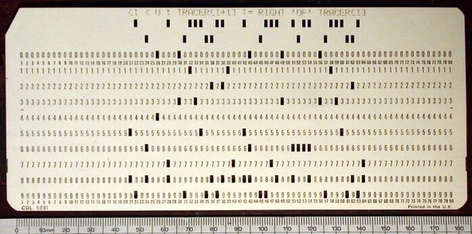

How computers work
christophe@pallier.org
Sep. 2015
Definitions from .Merriam-webster:
- A mechanism that is relatively self-operating
- A machine or control mechanism designed to follow automatically a predetermined sequence of operations
Examples:
- “Canard” et “Joueur de flûte” by Jacques de Vaucanson (1733)
“L’Encyclopédie fit de Vaucanson un demi-dieu et le célébra pour ses automates extraordinaires : pour la première fois des êtres artificiels étaient capables, par le génie du cerveau humain, de jouer parfaitement d’un instrument de musique ou de se comporter comme de véritables êtres vivants.”
Finite state automaton description of Bengalese Finch songs
From Berwick et al., 2011 Trends in Cognitive Sciences 15, 3: 113–21
(see also Descartes. Les animaux Machines Lettre au Marquis de Newcastle
Computer = automaton with an additional memory store.
Alan Turing (1936).
Intended as a mathematical model of computation, it is a finite state machine augmented with a tape and a mechanism to read/write on it.
. . .
In the 1930s, there were several independent attempts to formalize the notion of computability, and it was discovers that all of them were equivalent in power!
Church–Turing thesis : a function on the natural numbers is computable in an informal sense (i.e., computable by a human being using a pencil-and-paper method, ignoring resource limitations) if and only if it is computable by a Turing machine.
For more information about Turing machines, see https://en.wikipedia.org/wiki/Turing_machine
A register machine is another computing model that is closer to actual computers.
The seven secrets of computer power revealed (Chapter 24 from Daniel Dennett (1023) Intuition Pumps and other tools for thinking)
(an older version is available at http://sites.tufts.edu/rodrego/files/2011/03/Secrets-of-Computer-Power-Revealed-2008.pdf)
(Online Demo at http://proto.atech.tufts.edu/RodRego/
Registers = memory locations, each with a unique address (1, 2, 3, …), and each able to have , as contents, a singel integer (0, 1, 2, …)
Processing unit that can execute instructions in a stepwise, one-at-a-time fashion. The processor knows just 3 instructions:
- End
- Increment register with 2 arguments: a register #, an step number
- Decrement register and Branch with 3 arguments, a register number and two step numbers.
1 DEB 0 2 3
2 INC 1 1
3 END
Exercice; Simlulate this program on a machine wheret Reg0 contains 4 and Reg1 contains 7, and explain what it is doing.
. . .
This program adds the content of register 0 to register 1 (destroying the content of 0)
Exercice: write a program that moves the content of reg4 intro reg5
. . .
1 DEB 5 1 2
2 DEB 4 3 4
3 INC 5 2
4 END
. . .
The following program copies the content of reg1 into reg3, leaving reg1 unchanged.
1 DEB 3 1 2
2 DEB 4 2 3
3 DEB 1 4 6
4 INC 3 5
5 INC 4 3
6 DEB 4 7 8
7 INC 1 6
8 END
1 DEB 3 1 2
2 DEB 4 2 3
3 DEB 1 4 6
4 INC 3 5
5 INC 4 3
6 DEB 4 7 8
7 INC 1 6
8 DEB 2 9 11
9 INC 3 10
10 INC 4 11
11 DEB 4 12 13
12 INC 2 11
13 END
. . .
Note that conditional branching is the key instruction that gives the power to the machine. Depending on the content of memory, the machine can do either (a) or (b).
Competence without comprehension. A machine can do perfect arithmetic without having to comprehend what it is doing.
What a number in a register stands for depends on the program
The register machine can be designed to discriminate any pattern that can be encoded with numbers (e.g. images, text, sensory inputs,…)
Programs can be encoded by numbers.
All programs can be given a unique number which can be treated as a list of instructions by a Universal Machine.
all improvements in computers over Turing machine (or Register machine), are simply ways of making them faster
There is no secret #7
- The first computers were not programmable. They were hardwired!
- Programmable computer:
- a program is a set of instructions stored in memory.
- Loaded and executed by a processor.
- Such programs are written in machine langage (the language of the processor)
Programs in higher-level languages (rather than Machine language) can be either * compiled, or * interpreted
In both cases, you write the program as textual files.
A compiler translates the program into an executable file in machine language. The exectutable file is standalone.
An interpreter reads the file and execute the commands one by one. It is slower, but easier to interact with. Disatvange: you need the interpreter at all time.
In the first computers, there was only one program running. Yo would load the program into memory, then run it until the end. Programs were ran in BATCH mode, in a sequence.
Then, it was realized that computers could ‘time-share’ between programs, allowing several users (or programs) to share the computer.
This requires an operating systems (O.S.). The O.S. is the first program that loads into the computer during the boot. When running:
it controls the hardware (screen/printer/disk/keybord/mouse,…) (drivers)
- it manages all the other programs (processes/tasks/applications).
- sharing memory
- allocating processors and cores
- allocating time
Check out Task Manager (Windows)/System Monitor (Linux)/ Activity Monitor (Mac)
Different OS offer different “views” of the computer (e.g. 1 button mouse in Mac, 2 in Windows, 3 in Linux), so often programs are designed to work on one OS (bad!). Prefer multiplatform software (like Python).
Several OS can be installed in a given machine: - choice at boot (multiboot) - an OS can run inside a virtual machine, that is a program running in another (or the same) OS, and emulating a full computer.
Terminal (or console): originaly, a device comprising a keyboard and screen, allowing a human to interact with a computer.
Notes:
- early computers had no keyboard, no screen. The input was done through punched cards and output would be printed out).

- in the mainframe era, many terminals were connected to a single, powerful, computer. Everybody was sharing the same computer.
With the advent of Personal Computers, the terminal and the computer became a single apparatus.
However, terminals can be virtual. Terminals are programs that let you run text programs. You interact by typing and displaying text. No graphical interface/no mouse.
Shell: a software that provides a way to interact with the operating system.
Graphical shells. Windows/Icons/Menus … Limited but ‘intuitive’
Textual shells (command lines). More powerful. It reads in commands and executes them. It can provide variables, loops,…, to facilitate automation of tasks. It provides a better control of the machine/better at automating tasks
See Wikipedia Shell_(Computing)
Windows: cmd/powershell. Mac/linux:bash/tsch…
Example (creating 20 directories in one command)
for f in 01 02 03 04 05 06 07 08 09 10; do mkdir -p subject_$f/data subject_$f/results; done
for f in 1 2 3 4 5: do python myprog.py $f ; done
Is it worth learning to use a textual shell today? Probably, BUT you can handle 90% of problems with Python.
Most computers (not all) have two kinds of memories: - volatile, fast, memory, which is cleared when the computer is switched off (caches, RAM) - ‘permanent’, slow, memory, which is not erased when the computer is switched off (DISKS)
The unit of storage is the file.
Files are nothing but blobs of bits stored “sequentially” on disks. A first file could be stored between location 234 and 256, a second file could be stored at location 456.
To access a file, one would need to know its location on the disk. To simplify users’s life, OSes provide a system of “pointers”, filenames.
To help users further, filenames are organised in a hierarchical structure (a tree) of directories (or folders).
So to locate a file, you must know - the disk (C:, D:, … in Windows only) - its location in the directory structure - its name
(note: a given file can have several names: cf. links)
Absolute pathnames vs. relative pathnames (..)
working directory A running program has a working directory. Filenames can be relative to this directory.
In Python:
import os
os.getcwd()
os.chdir('..')
os.getcwd()
A set of new functions that extend a language (.DLL (Windows);.a or .so (Linux); framework bundles (MacOs))
Dynamic libraries can be used simultaneously by several processes.
Eg. the function @@sqrt@@ can be defined once, and called by several programs, saving memory.
In Python, use @@import library
import math
math.srqt(2)